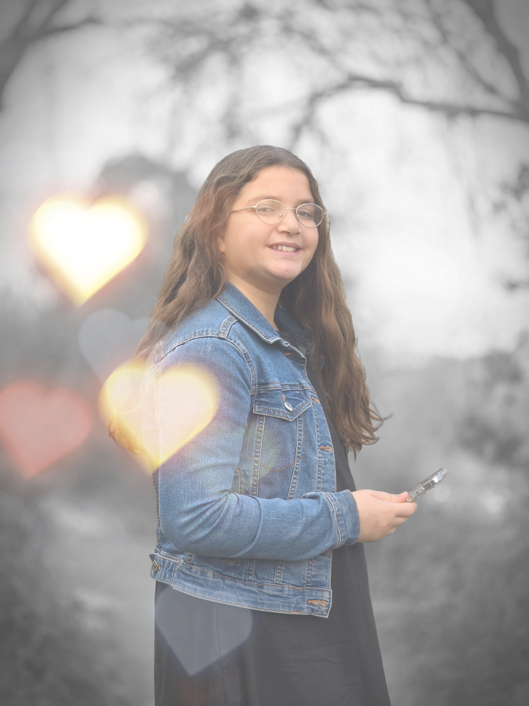

כל הכבוד! הצלחתם להגיע!

כעת כל שנותר לכם לעשות הוא לשוטט בין השולחנות ולמצוא את הציטוט...
בדרך תוכלו להתרשם ממה שעשיתי ולמדתי השנה
כעת כל שנותר לכם לעשות הוא לשוטט בין השולחנות ולמצוא את הציטוט...
בדרך תוכלו להתרשם ממה שעשיתי ולמדתי השנה